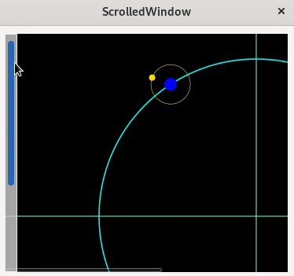
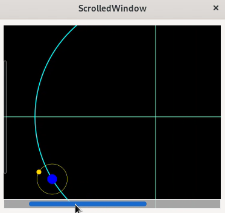

(update:2025/7/25)
Gtk::ScrolledWindowのwidgetの宣言を行います。
Gtk::ScrolledWindowを子Widgetとして親Widgetにセットします。
【関 数】
| void | Gtk::Window::set_child( | Widget & | child ) |
|---|
【返 値】 : 無し
スクロールバーが表示されるパターンをセットします。
【関 数】
| void Gtk::ScrolledWindow::set_policy( | PolicyType | hscrollbar_policy, | // 水平方向のｽｸﾛ-ﾙﾊﾞｰの配置形式 |
|---|---|---|---|
| PolicyType | vscrollbar_policy ) | // 水直方向のｽｸﾛ-ﾙﾊﾞｰの配置形式 |
【返 値】 : 無し
| Gtk::PolicyType | |
|---|---|
| 書式 | 内容 |
| ALWAYS | スクロールバーが常に表示される |
| AUTOMATIC | スクロールバーは、表示エリアがWindowより大きい場合に表示される |
| NEVER | スクロールバーは決して表示されない |
スクロールバーの表示位置を設定します。
【関 数】
| void Gtk::ScrolledWindow::set_placement( | CornerType | window_placement ) |
|---|
【返 値】 : 無し
| Gtk::CornerType | |
|---|---|
| 書式 | 内容 |
| TOP_LEFT | ウィジットの上端と右端にスクロールバーを配置 |
| BOTTOM_LEFT | ウィジットの下端と左端にスクロールバーを配置 |
| TOP_RIGHT | ウィジットの上端と右端にスクロールバーを配置 |
| BOTTOM_RIGHT | ウィジットの下端と右端にスクロールバーを配置 |
子ウィジットの幅・高さを指定しています。Gtk::PolicyTypeがAUTOMATICの場合は、親ウィジットより幅・高さが大きい場合は、水平・垂直方向のｽｸﾛｰﾙﾊﾞｰが有効になります。
Gtk::ScrolledWindowに子ウィジットをセットします。サンプルプログラムでは、Gtk::DrawingAreaをセットしています。
【関 数】
| void | Gtk::ScrollWindow::set_child( | Widget & | child ) |
|---|
【返 値】 : 無し
#include <gtkmm.h>
class MyDrawArea : public Gtk::DrawingArea {
public:
MyDrawArea();
virtual ~MyDrawArea() = default;
int diff;
protected:
virtual void on_draw( const Cairo::RefPtr<Cairo::Context>& cr, int width, int height );
bool on_timeout();
double m_radius1, m_radius2;
int degree1, degree2;
};
MyDrawArea::MyDrawArea()
{
Glib::signal_timeout().connect( sigc::mem_fun( *this, &MyDrawArea::on_timeout), 20 );
set_draw_func( sigc::mem_fun( *this, &MyDrawArea::on_draw ));
m_radius1 = 200.0;
m_radius2 = 25.0;
diff = 1;
}
void MyDrawArea::on_draw( const Cairo::RefPtr<Cairo::Context>& cr, int width, int height )
{
double dx1, dy1;
double dx2, dy2;
double cx, cy;
// 画面の中心位置
cx = 0.5 * width;
cy = 0.5 * height;
// 背景の着色
Gdk::Cairo::set_source_rgba( cr, Gdk::RGBA( "black" ));
cr->paint();
// 座標軸
cr->move_to( 0.0, cy );
cr->rel_line_to( width, 0.0 );
cr->move_to( cx, 0.0 );
cr->rel_line_to( 0.0, height );
cr->set_line_width( 1.0 );
Gdk::Cairo::set_source_rgba( cr, Gdk::RGBA( "Aquamarine" ));
cr->stroke();
// circle1
cr->arc( cx, cy, m_radius1, 0.0, 2.0 * M_PI );
cr->set_line_width( 1.5 );
Gdk::Cairo::set_source_rgba( cr, Gdk::RGBA( "Aqua" ));
cr->stroke();
// ball1
degree1 += diff;
if ( degree1 >= 360 ) {
degree1 = 0;
}
dx1 = m_radius1 * cos( degree1 * M_PI / 180 );
dy1 = m_radius1 * sin( degree1 * M_PI / 180 );
cr->arc( cx + dx1, cy + dy1, 8.0, 0.0, 2.0 * M_PI );
Gdk::Cairo::set_source_rgba( cr, Gdk::RGBA( "blue" ));
cr->fill();
// circle2
cr->arc( cx + dx1, cy + dy1, m_radius2, 0.0, 2.0 * M_PI );
Gdk::Cairo::set_source_rgba( cr, Gdk::RGBA( "yellow" ));
cr->set_line_width( 0.5 );
cr->stroke();
// ball2
degree2 += diff * 4;
if ( degree2 >= 360 ) {
degree2 = 0;
}
dx2 = m_radius2 * cos( degree2 * M_PI / 180 );
dy2 = m_radius2 * sin( degree2 * M_PI / 180 );
cr->arc( cx + dx1 + dx2, cy + dy1 + dy2, 4.0, 0.0, 2 * M_PI );
Gdk::Cairo::set_source_rgba( cr, Gdk::RGBA( "gold" ));
cr->fill();
}
bool MyDrawArea::on_timeout()
{
queue_draw();
return true;
}
class MyWindow : public Gtk::Window {
public:
MyWindow();
virtual ~MyWindow() = default;
protected:
// Child widgets:
// 1.宣言
Gtk::ScrolledWindow m_scr;
MyDrawArea m_drawarea;
};
MyWindow::MyWindow()
{
set_title( "ScrolledWindow" );
set_default_size( 380, 360 );
// 2.ScrolledWindowを親ウィジットの子ウィジットとして指定
set_child( m_scr );
m_scr.set_margin( 10 );
m_scr.set_expand();
// 3.スクロールバーの表示のタイプ
m_scr.set_policy( Gtk::PolicyType::AUTOMATIC, Gtk::PolicyType::ALWAYS );
// 4.スクロールバーの表示位置
m_scr.set_placement( Gtk::CornerType::TOP_RIGHT );
// 5.子ウィジットの大きさを指定
m_drawarea.set_size_request( 640, 480 );
// 6.ScrollWindowに子ウィジットをセット
m_scr.set_child( m_drawarea );
}
int main(int argc, char *argv[])
{
auto app = Gtk::Application::create( "gtkmm4.examples" );
return app->make_window_and_run<MyWindow>(argc, argv);
}
| Gtk::ScrolledWindow | |
|---|---|
| 鉛直方向のスクロールバー | 水平方向のスクロールバー |
|  |  |